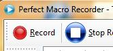
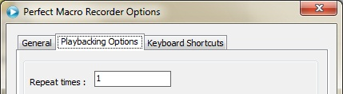
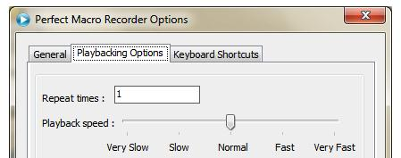

Frequently Asked Questions
-
What is Perfect Macro Recorder?
Perfect Macro Recorder is the easiest windows automation and macro recorder tool for Microsoft Windows!
-
What is a macro?
A sequence of keyboard strokes and mouse actions that can be recorded so that their playback can be triggered by a single keystroke, keystroke combination, or mouse click.
-
What is a macro recorder?
A macro recorder is a software tool that "records" user actions for "playback" later.
-
What will happen when you playback a macro?
When you playback a macro, all the keyboard and mouse actions you have recorded will be playback just as you record it.
-
What is a macro?
A sequence of keyboard strokes and mouse actions that can be recorded so that their playback can be triggered by a single keystroke, keystroke combination, or mouse click.
-
How can I record and playback a macro using Perfect Macro Recorder?
Here is a video tour in how to record and playback a macro.
-
What is the benefit of playback a macro?
When you playback a recorded task, you eliminate the repetition action of doing it more and more, so you can relief yourself for another creative task in which you really love, and later you will discover how to bundle many tasks into only one task called "playback the macro". With Perfect Macro Recorder you will save time, money, perform complex tasks and increase productivity.
-
How can I start recording?
To start recording your activates, simply click Record button...

Or hit start recording hot key (Ctrl + R) (you can change it from Perfect Macro Recorder's settings) -
How can I stop recording?
Yes, you can by using "Repeat Times" option under "Playback Options" tab in Perfect Macro Recorder's settings.
 -
Can I repeat playback?
Yes, you can by using "Repeat Times" option under "Playback Options" tab in Perfect Macro Recorder's settings.
-
How can i start playback?
- * Click the playback icon
- * Open a Perfect Macro Recorder file (*.pmac files)
- * Use start playback hot key (Ctrl+P). You can change it from Perfect Macro Recorder's settings
-
Can I change the playback speed?
Yes, you can set playback speed between very slow to very fast.
 -
How can I stop playback?
Press Ctrl+B (You can assign another hot key from Perfect Macro Recorder's settings) or hit Ctrl+Alt+Del or Ctrl+Esc.
-
What is the macro script editor?
A brilliant way to analysis your macro and get a look inside it.
-
What is and executable macro?
A macro that compiled to an executable file so that it will work without the need for Perfect Macro Recorder, the file will need only .Net Framework 3.50 to be installed.
-
How to create executable macro?
To create an executable macro file, click the "Exe" icon.
-
Can I install Perfect Macro Recorder under Windows 7?
Surely, you can install Perfect Macro Recorder under Windows 7.
-
Do I need to disable UAC to run Perfect Macro Recorder?
No, you do not need to disable User Account Control to run Perfect Macro Recorder under both Windows Vista or Windows 7.
-
What is *.pmac file and what is stored in it?
The file that contains a macro data, recorded by Perfect Macro Recorder.
-
Is there a version of Perfect Macro Recorder for Mac or Linux?
No, currently Perfect Macro Recorder can only run under the windows.
-
What are system requirements of Perfect Macro Recorder?
- * Intel Pentium, Celeron, AMD or compatible processor
- * Windows 7/Vista/2003/XP/2000/Windows NT4
- * .NET FrameWork 3.50
-
What are the restrictions of the evaluation version?
- * It has a trial period of 15 days only.
- * You cannot load a macro.
- * When compiling a macro to an executable file,
the evaluation version compiles only the first 100 lines of the macro script. - * You cannot save a macro.
- * You cannot save your macros to a default folder with a default name.
-
How to order Perfect Macro Recorder?
Click here for ordering FAQ.
-
Where i can find a volume discounts for multiple licenses?
Yes, there are volume discounts available at Perfect Macro Recorder order page
-
Do you offer site licenses?
For site licenses, please contact us.